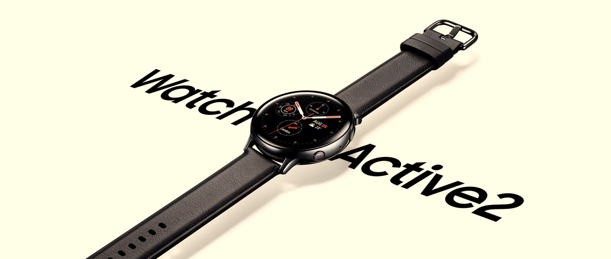

가장자리를 조작 영역으로Use the edge as a control surface
콘텐츠를 가리지 않으면서 원형 형태의 이점을 살렸습니다.Preserved the circular form without covering content.
Product interaction · Shipped · 2019
UX Project Lead이자 Main UX Designer로 전체 탐색 경험을 조율했습니다. Touch Bezel의 동작과 햅틱을 다듬고, 앱 탐색의 대안인 List View는 프로토타입으로 검토하며 제품화를 진행했습니다.As UX Project Lead and main UX designer, I coordinated the overall navigation experience. I refined Touch Bezel’s motion and haptics and used prototypes to explore List View as an alternative way to browse apps, working with the team through launch.

Galaxy Watch Active2 · Samsung Electronics · 2019물리 베젤 없이도, 익숙한 원형 탐색의 감각을 살려야 했습니다.We needed to preserve the feel of circular navigation without a physical bezel.
전작 Galaxy Watch Active에서 물리 베젤이 사라졌지만, 탐색 구조는 여전히 원형 조작에 맞춰져 있었습니다. Active2에서는 화면 가장자리를 따라 움직이는 손가락에 모션과 햅틱이 반응하도록 설계해, 베젤 없이도 탐색을 제어하는 감각을 되살리고자 했습니다.The previous Galaxy Watch Active had removed the physical bezel, but its navigation was still built around circular input. For Active2, we paired movement along the display edge with motion and haptic feedback to restore a sense of control without the bezel.
UX Project Lead로 탐색 구조와 관련 과제의 우선순위를 조율하면서, Touch Bezel의 손가락 이동량·화면 반응·햅틱을 직접 다듬었습니다. 새로운 조작을 사용자가 익히는 방법도 튜토리얼과 함께 검토했습니다.As UX Project Lead, I coordinated the navigation structure and related priorities while refining the relationship between finger movement, screen response, and haptics. The work also covered how people would learn the new interaction through its tutorial.
화면 가장자리를 따라 스와이프하면 목록이 회전하고, 손가락 이동량과 모션, 햅틱 피드백이 함께 반응하도록 설계했습니다. 단순한 제스처 추가가 아니라, 시각·촉각 피드백과 학습 방법까지 하나의 상호작용으로 조율하는 일이었습니다.A swipe along the screen edge rotates content, with finger travel, motion, and haptic feedback tuned as one response. The work was not simply adding a gesture; it was coordinating visual and tactile feedback with how the interaction is learned.
콘텐츠를 가리지 않으면서 원형 형태의 이점을 살렸습니다.Preserved the circular form without covering content.
손가락과 콘텐츠 반응의 관계를 조율해 제어감을 높였습니다.Tuned the relationship between finger movement and content response.
작은 화면에서 위치와 단계 변화가 손끝으로도 느껴지게 했습니다.Made position and step changes perceptible through touch.
List View는 앱을 목록으로 찾을 수 있게 했고, Ongoing icon은 진행 중인 작업으로 바로 돌아가는 길을 제공했습니다. My Style은 사진에서 추출한 색으로 시계 화면을 개인화했습니다. 탐색, 작업 복귀, 자기표현이라는 서로 다른 필요를 제품 안에서 함께 다뤘습니다.List View offered a familiar way to find apps. The Ongoing icon provided a direct route back to an active task. My Style used colors from a photo to personalize the watch face. Together, they addressed navigation, task continuity, and self-expression.
Touch Bezel과 사진 기반 워치페이스 개인화는 Galaxy Watch Active2에 출시되었습니다.Touch Bezel and photo-derived watch-face personalization shipped with Galaxy Watch Active2.
UX Project Lead로 탐색·멀티태스킹·개인화의 우선순위를 조율했습니다. Touch Bezel과 주요 흐름은 직접 설계·검증했고, 팀과 함께 출시 사양으로 다듬었습니다. Galaxy Watch Active2 UX는 2020 iF Design Award를 수상했습니다.As UX Project Lead, I coordinated priorities across navigation, multitasking, and personalization. I designed and tested Touch Bezel and the key flows, then worked with the team to refine them for launch. The Galaxy Watch Active2 UX received a 2020 iF Design Award.
물리 베젤의 역할을 화면 가장자리 상호작용으로 재해석Reinterpreted the physical bezel as an edge interaction
Touch Bezel · List View · Ongoing · My StyleTouch Bezel · List View · Ongoing · My Style
Galaxy Watch Active2 글로벌 출시Galaxy Watch Active2 global launch
Galaxy Watch Active2 UX · iF Design Award 2020Galaxy Watch Active2 UX · iF Design Award 2020